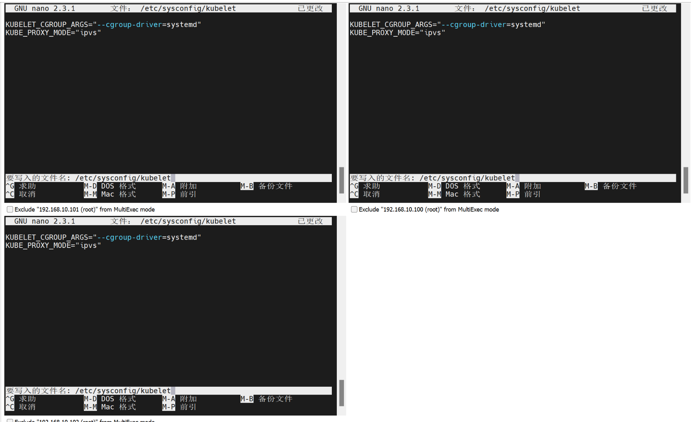

一、WSL（官网）
Windows Subsystem for Linux (WSL) 是一项功能，允许在 Windows 系统上运行 Linux 发行版。安装教程如下：
https://learn.microsoft.com/zh-cn/windows/wsl/install
二、Docker（官网）
1、简介
Docker是一个开源的应用容器引擎，让开发者可以打包他们的应用以及依赖包到一个可抑制的容器中，然后发布到任何流行的Linux机器上，也可以实现虚拟化。容器完全使用沙盒机制，相互之间不会存在任何接口。几乎没有性能开销，可以很容易的在机器和数据中心运行。最重要的是，他们不依赖于任何语言、框架或者包装系统。Docker和虚拟机类似，都是虚拟化技术。
因此，借助Docker，我们可以很方便地部署各种环境
2、Docker的核心概念
（1）镜像（Image）
Docker 镜像是一个轻量级、可执行的独立软件包，包含了应用程序运行所需的所有内容，包括代码、库、环境变量、配置文件等。镜像是容器的蓝图或模板，是一个静态的文件，描述了容器的运行环境。
（2）容器（Container）
容器是镜像的运行时实例，它是一个隔离的、轻量的执行环境。容器是临时性的，可以启动、停止、移动并删除。容器是由镜像创建的，并且可以在不同的计算机或环境中运行，而不依赖于主机操作系统。
（3）Dockerfile
Dockerfile 是一个文本文件，其中包含了构建 Docker 镜像的所有指令。它描述了如何从一个基础镜像开始，通过一系列步骤（例如安装软件、复制文件、设置环境变量等）构建出新的镜像。
3、配置Docker环境
（1）设置Docker的存储库
# Add Docker's official GPG key:
sudo apt-get update
sudo apt-get install ca-certificates curl
sudo install -m 0755 -d /etc/apt/keyrings
sudo curl -fsSL https://download.docker.com/linux/ubuntu/gpg -o /etc/apt/keyrings/docker.asc
sudo chmod a+r /etc/apt/keyrings/docker.asc
# Add the repository to Apt sources:
echo \
"deb [arch=$(dpkg --print-architecture) signed-by=/etc/apt/keyrings/docker.asc] https://download.docker.com/linux/ubuntu \
$(. /etc/os-release && echo "${UBUNTU_CODENAME:-$VERSION_CODENAME}") stable" | \
sudo tee /etc/apt/sources.list.d/docker.list > /dev/null
sudo apt-get update
（2）安装Docker软件包
sudo apt-get install docker-ce docker-ce-cli containerd.io docker-buildx-plugin docker-compose-plugin
（3）可以通过运行映像来验证安装是否成功
sudo docker run hello-world
具体的教程可以参见下面（任选一个就行）
https://docs.docker.com/engine/install/ubuntu/
https://cloud.tencent.com/document/product/213/46000#1H-kXbk9zoqvzYMVPVsBO
（4）配置镜像源文件
由于国内镜像源很多已经失效，所以在安装完docker后建议更改为当前还可使用的镜像源，方便拉取镜像，更改镜像源的方法如下：
- 编辑镜像源文件
sudo vi /etc/docker/daemon.json
- 按键盘上的 i 键，之后把下面的代码贴进去
- 下面添加内容的含义是指定多个镜像源，目的是加速Docker镜像的拉取过程，后续如果发现可用的镜像源可以直接添加到下面的镜像源列表中
{ "registry-mirrors" : [ "https://docker.m.daocloud.io", "https://noohub.ru", "https://huecker.io", "https://dockerhub.timeweb.cloud", "https://docker.rainbond.cc" ] }
- 按esc键，退出编辑模式。
- 输入下面的命令，再回车
:wq
- 重启docker使其生效
sudo systemctl restart docker
- 为了不让后续所有对docker的操作都加上sudo，我们将当前用户添加到docker组：
sudo usermod -aG docker $USER
- 运行以下命令来使组变更立即生效：
newgrp docker
- 验证 Docker 权限，能看到当前运行的docker就是添加成功了：
docker ps

4、Docker的常用命令
（1）帮助命令
- 显示docker的信息
docker version
- 显示docker的信息
docker info
- 帮助命令
docker 命令 --help
（2）镜像命令
- 显示当前所有的本地镜像
docker images
- 查找镜像
docker search
由于镜像源的限制，无法使用search进行查找，因此在浏览器访问下面的网页，进入Dockerhub镜像站搜索想要的镜像：
Docker Hub Container Image Library | App Containerization
- 拉取镜像
docker pull
- 删除镜像
docker rmi
（3）容器命令
- 列出所有（运行的）容器
docker ps -a
docker ps
- 新建容器并启动
docker run [参数] image
参数说明
--name="name" 容器名字：用来区分容器
-d 后台方式运行：相当于nohup
-it 使用交互式运行：进入容器查看内容
-p 指定容器的端口（四种方式）小写字母p
- 进入当前正在运行的程序
docker exec -it 容器id /bin/bash
- 从容器内拷贝文件到主机
docker cp 容器id:容器路径 主机路径
如：docker cp 6eda31ad7987:/home/test.java /home
- 退出容器
exit
- 启动容器
docker start 容器id
- 重启容器
docker restart 容器id
- 停止当前运行的容器
docker stop 容器id
- 强制停止当前容器
docker kill 容器id
- 删除容器
docker rm 容器id
- 删除全部容器
docker rm -f $(docker ps -aq)
- 查看容器日志
docker logs 容器名
三、Kubernetes（官网）
1、简介
Kubernetes（也称为 K8s）是一个开源系统，用于自动部署、扩展和管理容器化应用程序。
k8s和docker的关系：
- Docker 提供了容器化技术的基础，专注于单机和单容器的构建与运行。
- Kubernetes 构建在 Docker 等容器技术之上，负责管理和编排大规模的容器化应用。
2、k8s的核心概念
（1）Pod
- 定义：Pod是Kubernetes中最小的可部署对象，用于托管容器应用程序。一个Pod可以包含一个或多个容器，这些容器共享网络和存储，并共同部署到同一节点上。
- 作用：Pod是Kubernetes管理的最小单元，它提供了一种将容器组合成一个逻辑单元的方式，以便在集群中共同部署和管理。
（2）Deployment
- 定义：Deployment是用于定义Pod如何部署和更新的控制器。它允许用户指定副本数量、升级策略等，并确保指定的Pod始终处于预期状态。
- 作用：Deployment通过管理ReplicaSet来确保Pod的副本数量符合预期，并支持滚动更新和回滚操作，使得应用程序的部署和更新更加灵活和可靠。
（3）Service
- 定义：Service是一种抽象，用于定义一组Pod的访问方式。通过Service，可以为一组Pod提供统一的DNS名称和稳定的IP地址，实现负载均衡和服务发现。
- 作用：Service为Pod提供稳定的访问入口，使得客户端能够透明地访问后端Pod集群，同时支持负载均衡和故障转移。
（4）Namespace
- 定义：Namespace提供了一种将集群划分为多个虚拟集群的方式。每个Namespace都可以包含自己的资源对象，帮助组织和隔离不同团队或项目的资源。
- 作用：Namespace通过逻辑隔离集群资源，提高了集群的可用性和安全性，使得不同团队或项目可以独立管理自己的资源。
（5）ReplicaSet
- 定义： ReplicaSet 是 Kubernetes 中用于确保指定数量的 Pod 副本在集群中运行的控制器。它会自动创建或删除 Pod，以确保当前运行的 Pod 数量与定义中的副本数一致。
- 作用： ReplicaSet 的作用是保证应用的高可用性和负载均衡。它能够确保某个应用（即 Pod）在任何时间都有固定数量的副本在运行。如果某个 Pod 因为某种原因（如节点故障、容器崩溃等）停止工作，ReplicaSet 会自动创建新的 Pod 以替代它，确保副本数始终保持一致。
（6）ConfigMap/Secret
- 定义: ConfigMap 是一种用于存储非敏感配置信息的 Kubernetes 对象。它允许将配置数据以键值对的形式存储，并能够被 Pod 或其他 Kubernetes 对象引用。
- 作用: ConfigMap 使得配置与应用代码解耦，支持动态修改应用的配置，而不需要重新构建镜像或修改代码。可以将配置作为环境变量、命令行参数或挂载到容器的文件系统中。
- Secret是加密后的ConfigMap，用于存储敏感配置信息的 Kubernetes 对象
（7）Node
- 定义：Node是Kubernetes集群中的工作节点，负责运行容器化的应用程序。每个Node都有自己的资源和容量，可以托管多个Pod。
- 作用：Node是Kubernetes集群中的计算资源，通过运行Pod来承载应用程序的容器。Node与Master节点协作，共同实现集群的管理和控制。
（8）Cluster
- 定义：Cluster是由多个Node组成的Kubernetes集合，共同管理和运行容器化应用程序。Cluster包括Master节点和Worker节点，Master节点负责集群管理，Worker节点负责运行应用程序。
- 作用：Cluster提供了完整的容器编排和管理能力，通过Master节点和Worker节点的协作，实现了应用程序的自动化部署、扩展和管理。
（9）Master节点组件
- API Server：集群的统一入口，各组件协调者。
- Controller Manager：负责监控集群状态并确保集群达到预期状态，一个资源对应一个控制器。
- Scheduler：负责将新创建的Pod分配到集群中的节点上，根据资源需求、策略和约束条件等进行调度决策。
- etcd：分布式键值存储系统，用于存储集群的配置信息、状态信息等。
（10）Worker节点组件
- Kubelet：运行在每个工作节点上的代理，负责管理节点上的Pod生命周期，与Master节点上的API Server进行通信。
- kube-proxy：用于网络代理和负载均衡的组件，维护节点上的网络规则和转发规则。
3、部署k8s
（1）安装kubectl
Kubectl是Kubernetes 命令行工具，让用户可以对 Kubernetes 集群运行命令。用户可以使用 kubectl 来部署应用、监测和管理集群资源以及查看日志。
参考文档：https://kubernetes.io/zh-cn/docs/setup
- 下载 Kubernetes 的 kubectl 二进制文件
curl -LO "https://dl.k8s.io/release/$(curl -L -s https://dl.k8s.io/release/stable.txt)/bin/linux/amd64/kubectl"
- 下载 kubectl 校验和文件：
curl -LO "https://dl.k8s.io/release/$(curl -L -s https://dl.k8s.io/release/stable.txt)/bin/linux/amd64/kubectl.sha256"
- 基于校验和文件，验证 kubectl 的可执行文件：
echo "$(cat kubectl.sha256) kubectl" | sha256sum --check
- 验证通过时，输出为：kubectl: OK

- 安装 kubectl：
sudo install -o root -g root -m 0755 kubectl /usr/local/bin/kubectl
- 验证版本：
kubectl version --client

（2）安装minikube
Minikube 是一种轻量级的 Kubernetes 实现，可在本地计算机上创建 VM 并部署仅包含一个节点的简单集群。Minikube 可用于 Linux ， macOS 和 Windows 系统。Minikube CLI提供了用于引导集群工作的多种操作，包括启动、停止、查看状态和删除。
参考文档：minikube start | minikube (k8s.io)
- 在 x86-64 Linux 上使用二进制下载安装最新的 minikube 稳定版本
curl -LO https://storage.googleapis.com/minikube/releases/latest/minikube-linux-amd64
sudo install minikube-linux-amd64 /usr/local/bin/minikube && rm minikube-linux-amd64
- 验证版本
minikube version

（3）启动minikube
- 启动minikube
minikube start- 若上述命令卡住了，就使用下面的命令启动
- 这是由于国内镜像源的限制，直接使用minikube start会卡在拉取镜像的环节，这里使用下面的指令启动，让它使用本地的镜像
minikube start --driver=docker --base-image="registry.cn-hangzhou.aliyuncs.com/google\_containers/kicbase:v0.0.46"
- 查看当前的集群状态
kubectl cluster-info
- 查看当前的节点信息
kubectl get nodes
- 列出Kubernetes 集群中所有命名空间（NAMESPACE）下的 Pod 信息
kubectl get po -A


（4）minikube的dashboard
- minikube的dashboard为可选配置项，后续步骤用到的不多
- minikube提供了dashboard功能，用以在web端进行操作
minikube dashboard- 如果同样遇到了上图中一直卡住的问题，是由于国内镜像源的限制，在启动dashboard时会卡在拉取镜像的环节，因此我们同样指定它使用本地镜像来启动dashboard
- 将所需的镜像加载进minikube中
minikube image load kubernetesui/dashboard:v2.7.0
minikube image load kubernetesui/metrics-scraper:v1.0.8
- 进入minikube查看是否成功导入
minikube ssh
docker images

- 然后退出minikube
exit
- 编辑用于部署dashboard的两个yaml文件 ，更改为本地的镜像名称，并且修改拉取镜像的策略为：从不从外部拉取，只使用本地

- 修改第一个文件：
kubectl edit deployment -n kubernetes-dashboard kubernetes-dashboard
- 修改前如下所示，可以看到是因为带了哈希值导致找不到镜像，改为我们本地导入的镜像

- 修改成下图的样子
- 修改第二个文件：
kubectl edit deployment -n kubernetes-dashboard dashboard-metrics-scraper
- 修改前如下所示，可以看到是因为带了哈希值导致找不到镜像，改为我们本地导入的镜像

- 修改成下图的样子
- 删除 Pod 并让 Kubernetes 重建，再查看状态，就能发现在running状态了
kubectl delete pod -n kubernetes-dashboard -l k8s-app=kubernetes-dashboard
kubectl delete pod -n kubernetes-dashboard -l k8s-app=metrics-scraper
kubectl get pods -n kubernetes-dashboard
启动dashboard，到浏览器访问这个url链接能看到minikube的webui了
minikube dashboard


4、minikube常用命令
- 指定本地镜像启动minikube
minikube start --driver=docker --base-image="registry.cn-hangzhou.aliyuncs.com/google\_containers/kicbase:v0.0.46"
- 查看minikube的状态
minikube status
- 停止整个minikube
minikube stop
- 进入minikube内部
minikube ssh
- 向minikube中加载某个镜像
minikube image load 镜像名:版本号
如：minikube image load spark:latest
5、kubectl的常用命令
- 查看所有 Pod
kubectl get pods
- 获取 Pod 的详细信息
kubectl describe pod pod的名称
- 根据文件进行部署
kubectl apply -f 文件名
如：kubectl apply -f hive-server2-deployment.yaml
- 停止该文件的部署
kubectl delete -f 文件名
如：kubectl delete -f hive-server2-deployment.yaml
- 查看所有转发规则
kubectl get svc
- 进入pod
kubectl exec -it pod名称 -- bash
如：kubectl exec -it metastore-6d68d64845-cctrg -- bash
- 查看pod的日志
kubectl logs pod名称
如：kubectl logs metastore-6d68d64845-cctrg
- 创建命名空间
kubectl create namespace 命名空间
- 查看所有命名空间
kubectl get namespaces
- 删除命名空间
kubectl delete namespace 命名空间
- 查看资源使用情况
kubectl top nodes
kubectl top pods
6、真实的k8s集群搭建
（1）部署方式
- kubeadm：是一个 K8s 部署工具，提供 kubeadm init 和 kubeadm join，用于快速部署 Kubernetes 集群。
- 二进制包：从 github 下载发行版的二进制包，手动部署每个组件，组成 Kubernetes 集群。
- 这两种方式是目前生产部署 Kubernetes 集群的主要方式，这里我们采用第一种
（2）环境准备
- 进入时需要输入账号，这里自行注册一个就可以
- 下载centos的iso包，用于装配操作系统：https://vault.centos.org/7.7.1908/isos/x86_64/
- 下载MobaXterm，用于统一对虚拟机进行操作：https://mobaxterm.mobatek.net/download-home-edition.html

- kube-flannel.yml 文件是用于安装 Flannel CNI 插件的核心配置文件。Flannel 是 Kubernetes 集群中实现容器间网络通信的关键组件，它的作用是为 Pod 提供跨节点的网络互通能力。
- 所有文件均已备好，也可以直接使用
（3）配置虚拟机
- 我们需要准备三台虚拟机，一台作为master节点，两台作为node节点
| 角色 | IP地址 | 组件 |
|---|---|---|
| master | 192.168.10.100 | docker，kubectl，kubeadm，kubelet |
| node1 | 192.168.10.101 | docker，kubectl，kubeadm，kubelet |
| node2 | 192.168.10.102 | docker，kubectl，kubeadm，kubelet |
- 安装vmware后，先创建虚拟机master
- 前四步使用默认配置，直接点击下一步即可
- 定义当前虚拟机的名称为master，并设置存放它的位置
- 每个处理器的内核数量设置为2个
- 虚拟机的内存设置为2G
- 接下来的四步也使用默认配置，直接选择下一步即可

- 指定磁盘容量为20G
- 接着点击下一步，再点击完成，即可完成master虚拟机的创建
- 然后我们编辑master虚拟机的设置，找到CD/DVD(IDE)选项，选择我们之前在准备工作中下载好的centos映像文件
- 而后我们启动master，进入后回车

- 将滚动条拖动到最下面，选择中文

- 选择软件为基础设施服务器，然后返回
- 安装位置这里有个黄色感叹号，我们点进去再出来就可以消除了
- 接下来是设置网络与主机名，进入后我们点击配置

- 先点击常规栏，勾选“可用时自动链接这个网络”
- 而后切换到IPv4设置一栏，将方法设置为手动，再点击Add添加地址
- 这里所添加的部分需要在自己的vmware中找到默认的虚拟子网ip，点击vmware左上角的编辑，在下拉条中选择“虚拟网络编辑器”

- 选择VMnet8，下面的子网ip即为我们需要记住的部分，我们需要保留这个子网ip的前三位
- 也即对所有节点（当前为master节点）的ip配置中保留下面图中的192.168.10，那么我们的三台虚拟机的ip的最后一位便可以统一使用100、101和102
- 具体说来就是：192.168.10.100、192.168.10.101、192.168.10.102，这里需要根据自身的查看情况确定每个子网ip前三位的值
- VMnet8的NAT服务会将虚拟机的私有IP转换为宿主机的公网IP，使虚拟机可以访问外网，同时保护虚拟机不直接暴露在公网中

- 于是我们回到刚刚虚拟机的IPv4设置部分，由于这里是master节点，因此我们使用192.168.10.100，对于另外两台node节点所在的虚拟机，我们在配置时就需要将它设为192.168.10.101和192.168.10.102
- 后面的子网掩码我们使用刚刚在虚拟网络编辑器中看到的255.255.255.0
- 网关则同样需要保持前三位和虚拟网络编辑器中的子网ip一致，这里是192.168.10，最后一位可以统一取2
- 子网掩码决定了子网的大小，网关则负责将虚拟机的私有IP转换为宿主机的公网IP，实现虚拟机访问外网。在VMware的NAT模式（如VMnet8）中，网关通常是VMware虚拟网络中的NAT设备地址（例如192.168.1.2）
- 而DNS服务器我们统一使用阿里的：223.5.5.5
- DNS服务器的作用是将域名（如www.baidu.com）解析为IP地址（如 180.101.49.12），以便设备能够通过域名访问互联网资源
- 全部设置完毕后我们点击保存
- 而后我们修改主机名为master，再点击应用，应用完毕后就可以点击左上角的“完成”以退出网络设置了
- 接着我们就可以开始安装了
- 安装过程中我们需要设置root密码，需要记住这里所设置的密码，后面需要用它进行连接，这里也可以和我一样直接把密码也设置为root方便记忆
- 一直等待安装，而后点击右下角的“重启”
- 等待重启过程，而后使用root同时作为用户名与密码（root是我所设置的密码，你刚刚设置的root密码是什么这里就输入什么）进行登录，出现下面的界面就是登录成功了

- 到这里我们的第一台master虚拟机就已经配置完成了，接下来我们按照上面的方法，配置两个node节点所在的虚拟机
- node节点所在虚拟机的所有的过程均与上面的步骤一样，唯一不同的两点如下
- 一是在创建虚拟机时需要将虚拟机的名称与位置设置为node1和node2
- 二是在进行网络配置时，将node1与node2的ip地址设置为192.168.10.101与192.168.10.102，并修改主机名字为node1和node2，子网掩码、网关以及DNS服务器均与master节点所在虚拟机中的配置一样
（3）使用MobaXterm连接三台虚拟机
- MobaXterm是一款功能强大的远程计算工具，核心功能有远程连接、终端模拟、文件传输等，主要服务于Windows用户来管理Linux/Unix服务器
- 将下载的MobaXterm压缩包解压，然后打开其中的.exe文件，就可以直接运行了
- 这里需要注意，三台虚拟机都要处于启动状态，这样才可以连接上
- 进入界面后，我们点击左上角的“Session”，再点击这里的“SSH”，
- 这里的Remote host我们需要找到之前为三台虚拟机所各自配置的ip地址，在我这里是：192.168.10.100、192.168.10.101、192.168.10.102（这里的ip地址是之前根据自己的情况所配置的，请参考之前的配置过程，配置的是什么这里就用什么），一个Session对应一个ip地址，我们为三个虚拟机配置三个Session就可以了
- 而后我们勾选后面的Specify username，这里我们统一使用root登录
- 然后我们点击下方的ok，会要求我们输入密码，这里就是我们之前为root用户设置的密码，我这里设置的密码也是root，看到下面的界面即已经成功连接了
- 我们需要像上面那样继续建立Session，一共需要建立三个Session，以连接到我们所配置的三个虚拟机
- 我们点击工具栏中的Multiexec，这样我们就可以同时对三个虚拟机进行操作了
- 在一个窗口运行清屏命令clear来试试同时操作的功能
clear
（4）三个节点的统一基础环境配置
- 为了方便集群节点间的直接调用，我们先配置一下主机名解析
- 输入下面的指令以编辑/etc/hosts文件
- 需要注意的是，当我们复制内容粘贴到刚刚的同时执行窗口时，如果只粘贴到一个窗口中，是不会在三个窗口都同步操作的，可以在复制命令后点击右上角的Multi-paste，这样就可以直接将剪贴板中的内容同时粘贴到三个终端窗口中了，后续粘贴内容的时候也是如此操作
nano /etc/hosts
- 在文件中粘贴下面的内容，下面内容中的ip地址同样需要根据自己之前的配置更改
- 输入完毕后使用ctrl+x，然后按y，接着再回车即可退出文件编辑
192.168.10.100 master
192.168.10.101 node1
192.168.10.102 node2
- 配置后可以退出多终端执行模式，ping一下看看是否生效
ping master
ping node1
ping node2
- 操作完后我们继续进入多终端执行模式
- kubernetes要求集群中的节点时间必须精确一致，因此这里使用chronyd服务从网络同步时间，启动并设置开机自启，最后date验证时间是否一致
systemctl start chronyd
systemctl enable chronyd
date
- kubernetes和docker在运行的中会产生大量的iptables规则，为了不让系统规则跟它们混淆，直接关闭系统的规则
# 1 关闭firewalld服务
systemctl stop firewalld
systemctl disable firewalld
# 2 关闭iptables服务（本系统中没有，如果有也需执行）
systemctl stop iptables
systemctl disable iptables
- selinux是linux系统下的一个安全服务，如果不关闭它，在安装集群中也会产生各种各样的问题
# 编辑文件
nano /etc/selinux/config
# 更改SELINUX的值为disabled，这个需要重启后才生效，后面会统一重启
SELINUX=disabled
# 输入完毕后ctrl+x，然后按y，接着再回车即可退出文件编辑
- swap分区指的是虚拟内存分区，它的作用是物理内存使用完，之后将磁盘空间虚拟成内存来使用，启用swap设备会对系统的性能产生非常负面的影响，因此kubernetes要求每个节点都要禁用swap设备
- 这里的修改也需要重启后才生效，后面会统一重启
# 编辑文件
nano /etc/fstab
# 注释掉 /dev/mapper/centos-swap swap 所在行
# 输入完毕后ctrl+x，然后按y，接着再回车即可退出文件编辑
- 修改linux的内核参数，添加网桥过滤和地址转发功能
# 编辑/etc/sysctl.d/kubernetes.conf文件，
nano /etc/sysctl.d/kubernetes.conf
# 添加如下配置：
net.bridge.bridge-nf-call-ip6tables = 1
net.bridge.bridge-nf-call-iptables = 1
net.ipv4.ip_forward = 1
# 添加完毕后ctrl+x，然后按y，接着再回车即可退出文件编辑
# 重新加载配置
sysctl -p
# 加载网桥过滤模块
modprobe br_netfilter
# 查看网桥过滤模块是否加载成功，看到我们刚刚在配置中做的内容就是加载成功了
lsmod | grep br_netfilter
- ipvs是Kubernetes中Service的一种代理模型，我们需要手动载入ipvs模块
# 配置阿里云仓库
sudo curl -o /etc/yum.repos.d/CentOS-Base.repo https://mirrors.aliyun.com/repo/Centos-7.repo
# 清理并重建 yum 缓存
sudo yum clean all
sudo yum makecache
# 安装ipset和ipvsadm
yum install ipset ipvsadm -y
# 添加需要加载的模块写入脚本文件
cat < /etc/sysconfig/modules/ipvs.modules
#!/bin/bash
modprobe -- ip_vs
modprobe -- ip_vs_rr
modprobe -- ip_vs_wrr
modprobe -- ip_vs_sh
modprobe -- nf_conntrack_ipv4
EOF
# 为脚本添加执行权限
chmod +x /etc/sysconfig/modules/ipvs.modules
# 执行脚本文件
/bin/bash /etc/sysconfig/modules/ipvs.modules
# 5.查看对应的模块是否加载成功
lsmod | grep -e ip_vs -e nf_conntrack_ipv4
- 重启系统，以加载刚刚所修改的配置
reboot
- 这里需等待一会使配置生效，然后使用MobaXterm重新连接这三台虚拟机，即重新打开三个Session，可以看到修改的配置均已生效
# 查看SELINUX是否已经关闭，下面查看其值已经为disabled了
getenforce
# 查看swap分区是否关闭，下面的swap均为0即已关闭
free -m
- k8s可以通过docker管理和运行容器，这里我们安装docker
# 1、切换镜像源
wget https://mirrors.aliyun.com/docker-ce/linux/centos/docker-ce.repo -O /etc/yum.repos.d/docker-ce.repo
# 2、安装特定版本的docker-ce
yum install --setopt=obsoletes=0 docker-ce-18.06.3.ce-3.el7 -y
# 3、Docker 在默认情况下使用Vgroup Driver为cgroupfs，而Kubernetes推荐使用systemd来替代cgroupfs
mkdir /etc/docker
cat < /etc/docker/daemon.json
{
"exec-opts": ["native.cgroupdriver=systemd"],
"registry-mirrors": ["https://kn0t2bca.mirror.aliyuncs.com"]
}
EOF
# 4、启动dokcer并设置开机自启
systemctl restart docker
systemctl enable docker
- 安装k8s
# 1、由于kubernetes的镜像在国外，速度比较慢，这里切换成国内的镜像源
# 2、编辑/etc/yum.repos.d/kubernetes.repo
nano /etc/yum.repos.d/kubernetes.repo
# 添加下面的配置
[kubernetes]
name=Kubernetes
baseurl=http://mirrors.aliyun.com/kubernetes/yum/repos/kubernetes-el7-x86_64
enabled=1
gpgchech=0
repo_gpgcheck=0
gpgkey=http://mirrors.aliyun.com/kubernetes/yum/doc/yum-key.gpg
http://mirrors.aliyun.com/kubernetes/yum/doc/rpm-package-key.gpg
# 输入完毕后ctrl+x，然后按y，接着再回车即可退出文件编辑
# 3、安装kubeadm、kubelet和kubectl
yum install --setopt=obsoletes=0 kubeadm-1.17.4-0 kubelet-1.17.4-0 kubectl-1.17.4-0 -y
# 4、配置kubelet的cgroup
#编辑/etc/sysconfig/kubelet
nano /etc/sysconfig/kubelet
# 删去原先的KUBELET_EXTRA_ARGS=
# 添加下面的配置
KUBELET_CGROUP_ARGS="--cgroup-driver=systemd"
KUBE_PROXY_MODE="ipvs"
# 输入完毕后ctrl+x，然后按y，接着再回车即可退出文件编辑
# 5、设置kubelet开机自启
systemctl enable kubelet

- 准备集群所需镜像
# 在安装kubernetes集群之前，必须要提前准备好集群需要的镜像，所需镜像可以通过下面命令查看
kubeadm config images list
# 这些镜像kubernetes的仓库中，由于网络原因无法连接，下面使用阿里云仓库作为替代
images=(
kube-apiserver:v1.17.4
kube-controller-manager:v1.17.4
kube-scheduler:v1.17.4
kube-proxy:v1.17.4
pause:3.1
etcd:3.4.3-0
coredns:1.6.5
)
for imageName in ${images[@]};do
docker pull registry.cn-hangzhou.aliyuncs.com/google_containers/$imageName
docker tag registry.cn-hangzhou.aliyuncs.com/google_containers/$imageName k8s.gcr.io/$imageName
docker rmi registry.cn-hangzhou.aliyuncs.com/google_containers/$imageName
done
# 查看镜像的下载情况
docker images
- 接下来我们退出多终端执行模式，只需要在master节点的Session中执行即可
# 创建集群，下面的192.168.10.100需要改为你master的实际地址
kubeadm init \
--apiserver-advertise-address=192.168.10.100 \
--kubernetes-version=v1.17.4 \
--service-cidr=10.96.0.0/12 \
--pod-network-cidr=10.244.0.0/16
# 创建必要文件
mkdir -p $HOME/.kube
sudo cp -i /etc/kubernetes/admin.conf $HOME/.kube/config
sudo chown $(id -u):$(id -g) $HOME/.kube/config
- 上图中启动可以看到已经成功初始化了，我们找到上图中方框中的指令，将它复制到两个node节点的Session中执行
- 然后我们回到master的Session中，查看当前节点，可以看到三个节点都处于集群中了，但还都处于notready状态，这是因为网络问题
kubectl get nodes
- 我们依然只在master节点所在的Session中进行操作，安装网络插件
# 下载并部署calico.yaml文件
curl https://docs.projectcalico.org/v3.14/manifests/calico.yaml -O
kubectl apply -f calico.yaml
# 将我们最开始的环境准备时所下载的kube-flannel.yml文件拖拽到master的Session窗口（若无法下载则使用实验所提供的），即可以上传这个文件到当前目录，而后部署它
kubectl apply -f kube-flannel.yml
# 这里的kube-flannel.yml由于网络问题无法像calico.yaml文件一样使用curl下载，只能手动上传
- 此时我们需要等待一段时间（可能比较久），再次查看当前节点的状态，均已经为ready了
kubectl get nodes
- 这样我们就完成了一个真实生产环境中的k8s集群搭建，为了简化流程，在后续实验中，我们将使用minikube这一本地单节点部署工具来代替真实环境中的k8s集群